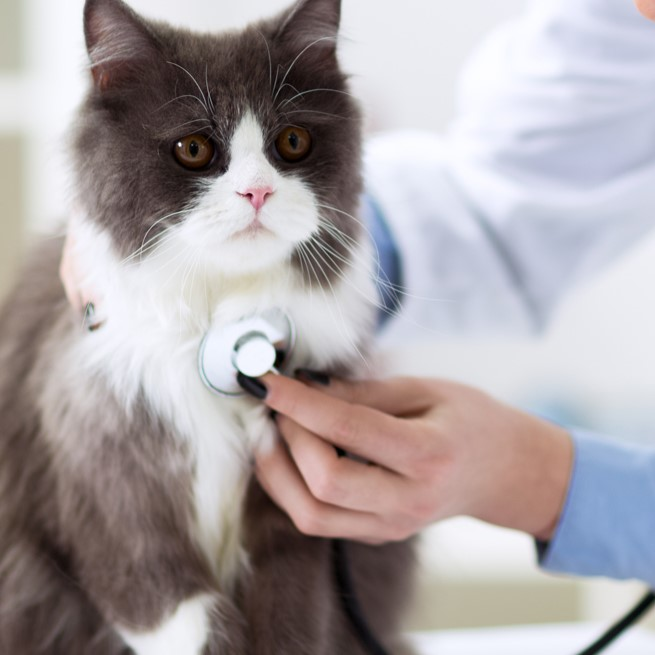
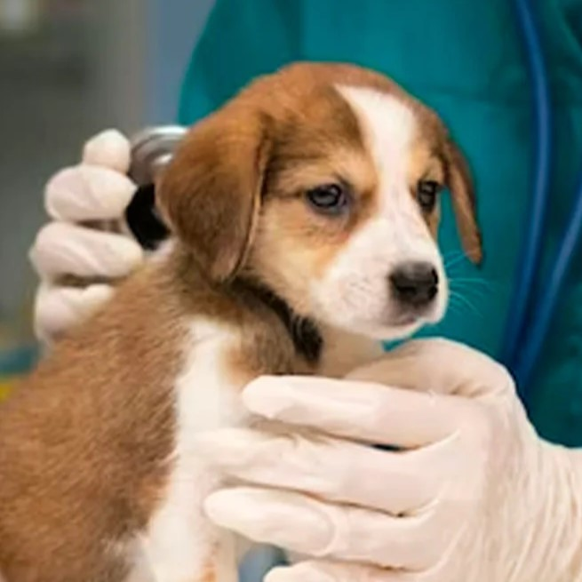
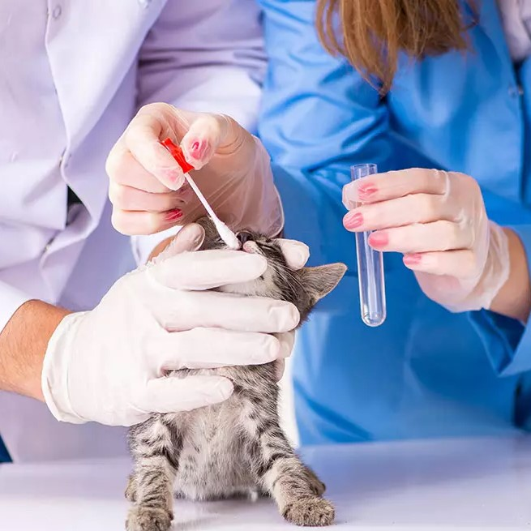
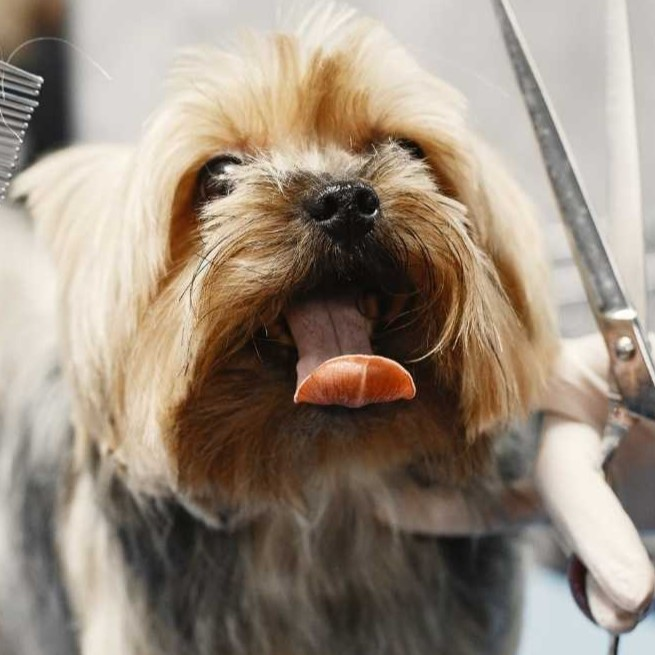
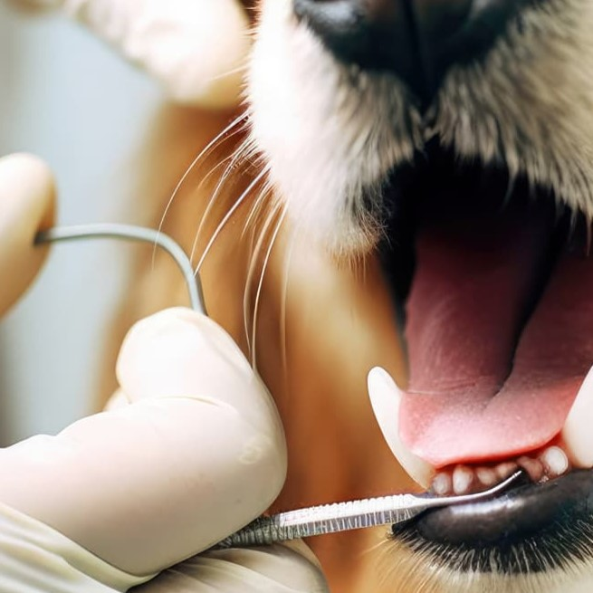
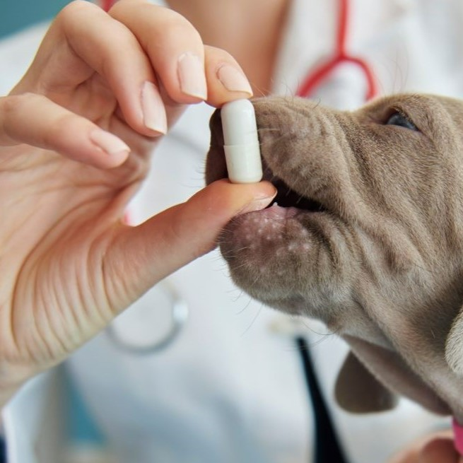
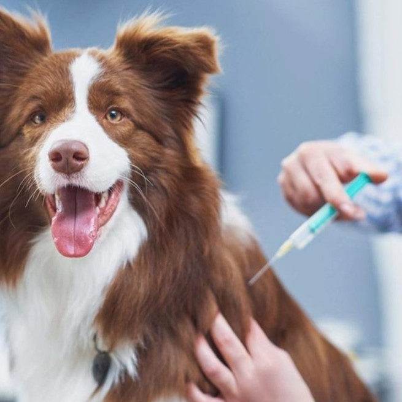

Cirugía
Garantizamos la total comodidad y seguridad de tu mascota. Te brindamos la tranquilidad de saber que tu mascota está siendo cuidada.
Ponemos a tu servicios los procedimientos quirurjicos, con costos accesibles dependiendo del procedimiento a realizar.

Revisión Medica
Ofrecemos una revisión medica personalizada, dependiendo de las necesidade e historial medico de tu mascota.
Contamos con personal altamente capacitado, para ofrecer un buen servicio. El costo de nuestro servicio es de: $150.00

Consultas
Consulta veterinaria, general, para tu mascota, ofrecemos buena atención y comodidad para tu mascota. Contamos con personal altamente capacitado.
el costo por consulta es de: $100.00

Estudios Clinicos
En nuestras instalaciones podras encontrar laboratorios clinicos especializados en procurar la salud de tu mascota.
Ofrecemos atención de primera calidad. Los costos son accesibles y depende del tipo de estudio solicitado por tu Medico veterinario.

Estetica Canina
Ponemos a su disposición el servicio de estetica canina, contamos con profesionales capacitados.
garantizamos un trabajo satisfactorio, los costos dependen del procedimiento a realizar

Servicio Odontologico
Contamos con servicio Odontologico para cuidar la salud bocal de tu mascota, tenemos personal altamente calificado.
los servisios de odontologia tienen costos variados dependiendo del procedimiento a realizar y el tamaño de tu mascota.

Desparacitación
Para procurar la salud de tu mascota, te ofrecemos el servicio de desparacitacion, con un costo totalmente accesble
de: $120 en adelante.

Vacunación
En la clinica veterinaria Vet- Care contamos con todas las vacunas necesarias para tu mascota.
los precios varian desde: $300 hasta $350 segun la vacuna y las dosis que requiera